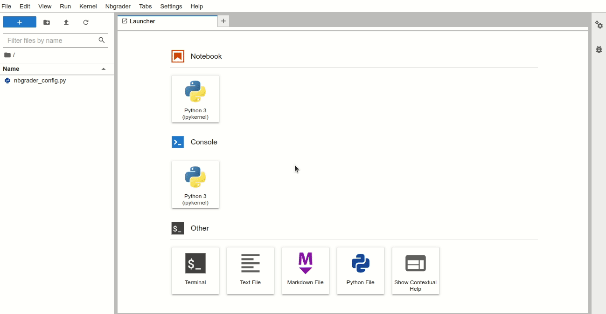
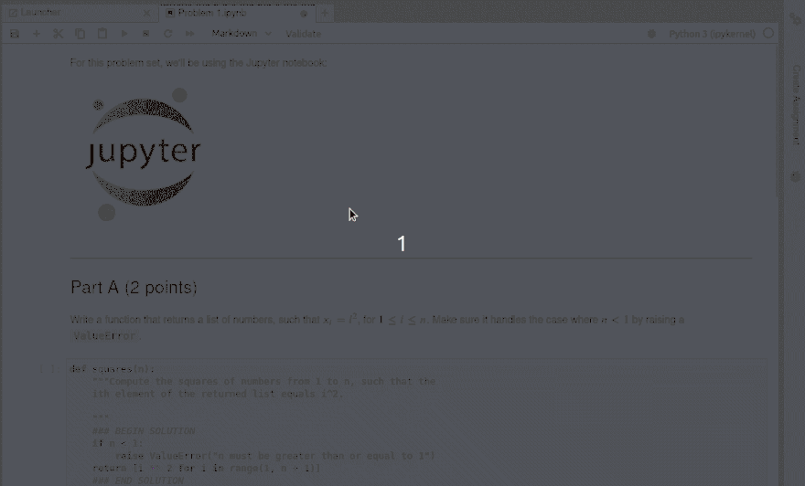
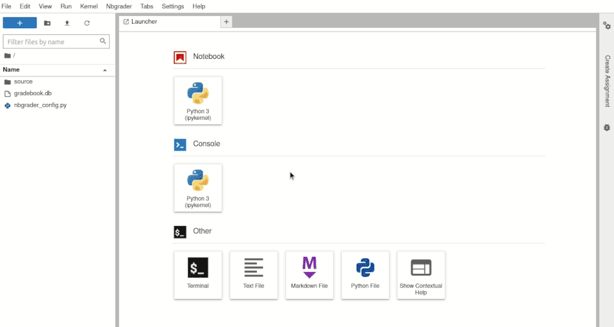

Highlights#
Broadly speaking, nbgrader implements:
A Jupyter notebook format for assignments: completely normal Jupyter notebooks with metadata to make them useful for teaching.
Student interface as Jupyter extensions.
Instructor interface as Jupyter extensions.
A method of exchanging files between instructors and students.
Notebook format#
Nbgrader actually doesn’t have its own notebook format: it is completely standard Jupyter, so you don’t have to learn anything new or need to put code into a teaching-only format. Let’s look at an example of an instructor’s notebook:
# Cell 1, cell metadata=autograded-answer
def add(a, b):
### BEGIN SOLUTION
c = a + b
### END SOLUTION
return c
# Cell 2, cell metadata=autograder-tests
assert add(1, 2) == 3
### BEGIN HIDDEN TESTS
assert add(-1, 2) == 1
### END HIDDEN TESTS
We see that this is a perfectly normal notebook, with cell metadata
tagging cells and some ### markup indicating lines to be
changed/removed in the student version. Testing the assignment
assignment is as simple as running the entire notebook and looking for
errors.
The student version is generated from the above to get:
# Cell 1
def add(a, b):
# YOUR CODE HERE
raise NotImplementedError()
return c
# Cell 2
assert add(1, 2) == 3
We see that this is also a valid notebook, with the assignment parts replaced with a placeholder. The student can attempt to do the assignment, and checking their work is as simple as “Restart kernel and run all cells” and looking for errors (which the validate button implements automatically).
When the instructor receives the assignment back from the students, Cell 2 is restored to its initial values (restoring the hidden test while leaving the student solution), and the autograding implementation is as simple as “Run all cells” and looking for error output in the autograded-tests cells).
Student interface#
Student assignment list extension for Jupyter notebooks#
Using the assignment list extension, students may conveniently view, fetch, submit, and validate their assignments. This is also where they recieve and review any feedback on those submissions:

Instructor interface#
Instructor toolbar extension for Jupyter notebooks#
The nbgrader toolbar extension for Jupyter notebooks guides the instructor through assignment and grading tasks using the familiar Jupyter notebook interface. For example, creating an assignment has the following workflow:

Instructor “formgrader” extension for Jupyter notebooks#
The formgrader extension for the Jupyter notebook allows instructors to use the core functionality of nbgrader—generating the student version of an assignment, releasing assignments to students, collecting assignments, autograding submissions, and manually grading submissions.

The command line tools of nbgrader#
The command line tools offer an efficient way for the instructor to generate, assign, release, collect, and grade notebooks. Here are some of the commands:
nbgrader generate_assignment: create a student version of a notebook
nbgrader release_assignment: release a notebook to students
nbgrader collect: collect students’ submissions
nbgrader autograde: autograde students’ submissions
nbgrader generate_feedback: create feedback files from graded submissions
nbgrader release_feedback: release the feeback files to students
The command line also offers students a way of working with notebooks:
nbgrader fetch: gets a released notebook
nbgrader submit: deposit a notebook for grading/review
nbgrader fetch_feedback: get any feeback for a submission